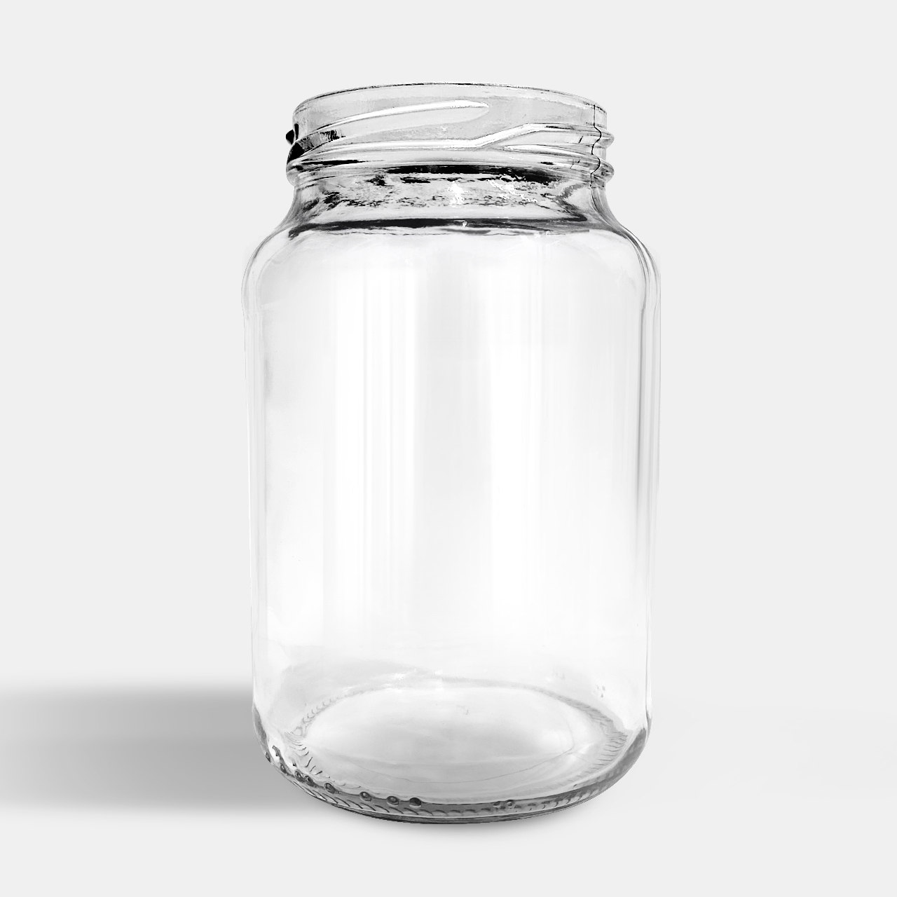

Como esterilizar pote de vidro reutilizado pra guardar geleia em casa

Guardou geleia, doce ou conserva num pote de vidro que já tinha em casa? Antes de fechar a tampa, tem um passo que faz a diferença entre a geleia durar semanas ou mofar em poucos dias: a esterilização. Não é feita só na primeira vez que o pote é usado. Todo pote reutilizado precisa passar por isso de novo, mesmo que pareça limpo.
Por que esterilizar, mesmo o pote parecendo limpo
Lavar com detergente remove sujeira e resíduo visível, mas não elimina os microrganismos que podem ter ficado nos poros microscópicos do vidro ou na rosca da tampa. Se esses microrganismos entrarem em contato com a geleia, o resultado é fermentação, mofo ou estufamento do pote, mesmo com o alimento guardado corretamente depois.
Antes de esterilizar: descarte o que não presta
Nem todo pote reutilizado vale a pena salvar. Descarte se a tampa estiver enferrujada, com a borracha de vedação ressecada ou rachada, ou se o vidro tiver lascado ou trincado. Um pote com vedação comprometida não vai manter o alimento seguro, por mais bem esterilizado que esteja.
Três formas de esterilizar
Antes de qualquer uma delas, lave bem o pote e a tampa com água e detergente neutro, com esponja macia, e enxágue até não sobrar espuma nenhuma.
Na água fervente
Coloque os potes e as tampas dentro de uma panela grande, cobertos por água. Leve ao fogo e, a partir do momento que a água começar a ferver, mantenha por 10 a 15 minutos. Retire com uma pinça ou pegador, sem tocar a parte interna, e deixe secar de boca para baixo sobre um pano limpo.
No forno
Coloque os potes (sem a tampa, se ela tiver qualquer parte plástica) numa forma ou direto na grade, e leve ao forno a 140°C por 15 minutos. Desligue o forno e deixe o vidro esfriar dentro dele mesmo antes de manusear. Nunca coloque um pote recém-saído do forno numa superfície fria ou molhada: a mudança brusca de temperatura pode trincar o vidro.
No micro-ondas
Só funciona pra pote e tampa sem nenhuma parte metálica. Coloque um pouco de água dentro do pote (cerca de um terço do volume), sem a tampa, e leve ao micro-ondas em potência alta até a água ferver, o que costuma levar de 2 a 3 minutos, e deixe fervendo por mais 1 minuto.
Depois de esterilizado
Encha o pote ainda morno ou já frio, nunca ainda fervendo, e feche bem a tampa. Guarde num lugar seco, ao abrigo de luz direta, e etiquete com a data de preparo. Depois de aberto, geleia caseira segue as regras normais de conservação de alimento em geladeira.
Quando faz mais sentido usar um pote novo
Esterilizar bem resolve pra reaproveitar um pote que já está em casa, mas pra quem vende geleia, doce ou conserva, ou faz isso com frequência, um pote novo com tampa de vedação garantida evita esse trabalho repetido e dá mais previsibilidade pro resultado final. O Pote Geleinha 40 ml, por exemplo, vem com fechamento twist-off e a garra padronizada em qualquer cor de tampa (azul, branca, dourada, preta ou rosa), e o Pote Conserva 600 ml segue a mesma lógica de fechamento em capacidade maior, pra quem guarda porções maiores de uma vez.
Se você já faz isso em escala, seja pra vender ou pra abastecer a própria casa o ano inteiro, vale considerar comprar os potes prontos em vez de depender do que sobrou de embalagem de outra coisa.